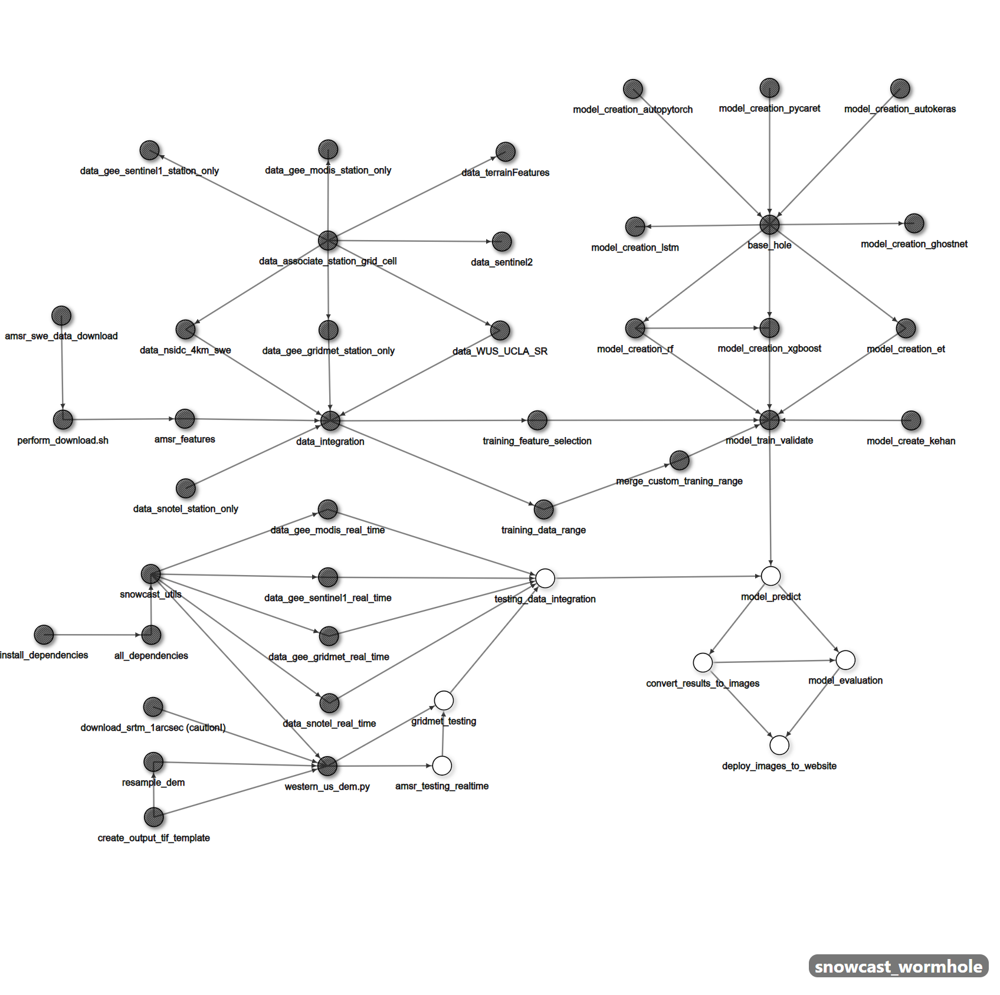

SWE Workflow#
In this chapter, we embark on a deep dive into the Snow Water Equivalence (SWE) Prediction Workflow, highlighting its architecture, components, and optimization techniques. This practical application of Pygeoweaver exemplifies how it seamlessly integrates data from diverse sources, including the Shuttle Radar Topographic Mission (SRTM) DEM and Advanced Microwave Scanning Radiometer (AMSR) data, to predict SWE in the Western United States. Our journey will provide a detailed understanding of how Pygeoweaver orchestrates this complex scientific process.
Understanding the Challenge#
Predicting Snow Water Equivalence (SWE) is a critical task with applications in water resource management, flood forecasting, and drought monitoring. In the Western US, where snowpack significantly impacts freshwater availability, accurate SWE predictions are paramount.
Datasets Fueling the Workflow#
NASA SRTM 30M DEM (Digital Elevation Model): This global dataset furnishes elevation information, playing a crucial role in influencing snow accumulation and melt patterns.
NSIDC AMSR Data: Derived from the Advanced Microwave Scanning Radiometer (AMSR2) instrument onboard the JAXA GCOM-W1 satellite, this dataset provides daily estimates of Snow Water Equivalent (SWE). Its microwave measurements offer a vital perspective on snowpack characteristics.
gridMET Meteo Datasets: These datasets, encompassing meteorological data such as temperature and precipitation, further enrich the SWE Prediction Workflow by providing crucial environmental context.
SNOTEL Ground Observations: Ground-based measurements of snowpack and weather conditions, like those from SNOTEL stations, contribute real-world observations that enhance the accuracy of predictions.

The Snow Water Equivalence (SWE) Workflow is structured into distinct processes, each serving a specific purpose in the data collection, model training, testing, and evaluation phases. Let’s delve into the details of these processes:
snowcast_utils:
Purpose: Contains reusable utility functions for testing & training the model.
Functionality: Provides essential functions to streamline the testing and evaluation of the SWE prediction model.
Testing the Model:#
western_us_dem:
Purpose: Collects Digital Elevation Model (DEM) data for the entire western US.
Functionality: Retrieves elevation data, which plays a crucial role in snow accumulation and melt patterns.
amsr_testing_realtime:
Purpose: Collects real-time Advanced Microwave Scanning Radiometer (AMSR) data for testing.
Functionality: Gathers real-time AMSR data to aid in model evaluation and predictions.
gridmet_testing:
Purpose: Collects Gridmet data from the Climatology Lab and performs preprocessing for integration.
Functionality: Ensures that Gridmet data, including meteorological information, is prepared for seamless integration into the workflow.
testing_data_integration:
Purpose: Combines data from the western US DEM, Gridmet, and AMSR sources into a single CSV file for testing.
Functionality: Harmonizes data from diverse sources, creating a unified dataset for model evaluation and predictions.
model_predict:
Purpose: Uses the specified machine learning model to predict SWE for the western US based on the CSV generated from the testing_data_integration process.
Functionality: Utilizes the integrated dataset to make SWE predictions, offering insights into snowpack conditions.
convert_results_to_images:
Purpose: Converts the CSV file generated from model predictions into images for visualization of the results.
Functionality: Enhances accessibility by rendering SWE predictions in a visual format.
model_evaluation:
Purpose: Tests the machine learning model trained during the testing phase for evaluation metrics.
Functionality: Provides valuable metrics to gauge the accuracy and reliability of SWE predictions.
Traning the Model:#
data_gee_gridmet_station_only:
Purpose: Collects Gridmet data for training the model within a specific data collection range.
Functionality: Gathers Gridmet data to prepare it for model training.
amsr_features:
Purpose: Collects AMSR data for training the model.
Functionality: Gathers AMSR data, a valuable source for training the model.
training_data_range:
Purpose: Trains the model with a specific data range, which can be specified in the process.
Functionality: Ensures that the model is trained on the data relevant to the desired range.
data_integration:
Purpose: Merges data from AMSR, Gridmet, and Snotel into one CSV file.
Functionality: Creates a unified dataset for model training, encompassing various data sources.
data_snotel_station_only:
Purpose: Collects Snotel data for training the model, which represents the true SWE values to be predicted.
Functionality: Provides crucial ground-based SWE observations for model training.
training_feature_selection:
Purpose: Selects specific features required for model training from the collected data.
Functionality: Cleans and prepares the data, ensuring that only relevant features are included in the training dataset.
model_train_validate:
Purpose: Trains the machine learning model and performs validation metrics after training.
Functionality: Trains the model and assesses its performance using validation metrics.
model_creation_et:
Purpose: Contains all the logic for the Extra Tree Regressor model.
Functionality: Implements the Extra Tree Regressor model for SWE prediction.
Each of these processes contributes to the overall success of the SWE Workflow, demonstrating the steps involved in predicting Snow Water Equivalence in the Western US. Pygeoweaver facilitates the seamless integration and execution of these processes, ensuring a streamlined and efficient workflow management experience
Preliminary Results#
While our workflow is operational, we face challenges. The model currently exhibits underestimation, particularly in mountain alpine snow regions, primarily due to overfitting. To rectify this, we’re implementing three strategies: adjusting sample ratios in the training data, refining model preferences using weight parameters, and exploring reinforcement learning to counteract underestimation. We’re also working on enhancing sensitivity to understand how input data influences model behavior. This involves utilizing techniques like feature importance analysis and correlation assessments.
Model interpretability is another focal point. We plan to integrate a dedicated step in the workflow to provide human-readable insights into the model’s decision-making process. This will enable us to comprehend the model’s inner workings and guide improvements effectively.
We recognize the importance of model evaluation both during and after training. Establishing robust evaluation metrics is essential for iterative progress. We aim to incorporate a dedicated evaluation step into the workflow to monitor model performance consistently. This will aid us in identifying areas for enhancement and guiding the refinement process with objective metrics, ultimately ensuring meaningful progress in each iteration.